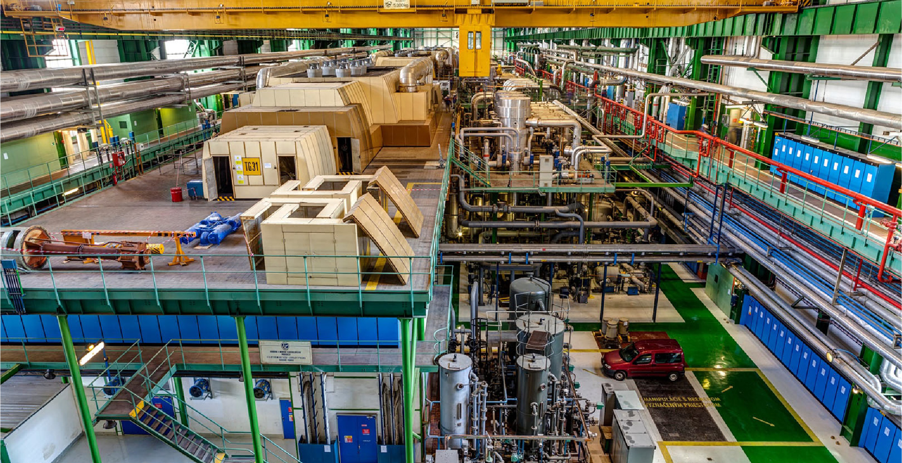

Source: CEZ Group, Slovenské elektrárne, a.s., MVM Paks Nuclear Power Plant Ltd.
V jaderném průmyslu až dosud neexistovala na akademické úrovni žádná spolupráce mezi všemi zeměmi V4. Chtěli bychom rozšířit již zavedenou spolupráci a tím zvýšit naši odbornost a rozsah. Tento první společný projekt pomůže rozvíjet spolupráci ve vzdělávání a odborné přípravě a samozřejmě také v oblasti výzkumu a vývoje.
Všechny visegrádské země buď provozují jaderné elektrárny, nebo plánují jadernou energii využívat. V České republice je asi 29% elektřiny vyrobeno v jaderných elektrárnách, v Maďarsku 50% a na Slovensku 55%. Polsko jako nová jaderná země plánuje podle vládní politiky zavést jadernou energii do svého energetického mixu do roku 2033.
Nejdůležitějším tématem je vzdělávání a školení lidí v různých oborech jaderného průmyslu (provoz jaderných elektráren, státní dozor, radiační ochrana, využití neutronů atd.). Česká republika, Slovensko a Maďarsko pracují na rozvoji lidských zdrojů v tomto odvětví již téměř 50 let a v této oblasti již existuje spolupráce. Přestože v Polsku chybí odborníci specializující se na udělování licencí a provoz jaderných elektráren, existují dlouhodobé zkušenosti s provozováním výzkumných reaktorů a jejich aplikací na výrobu radiofarmak.
Rozvíjení mezinárodní spolupráce mezi akademickými centry je velmi důležité, protože sdílení znalostí a zkušeností ve vzdělávání a odborné přípravě zvýší hodnotu našich absolventů na trhu práce. Organizací společného kurzu chceme dát studentům příležitost setkat se s odborníky v této oblasti a možnost navázat nové kontakty.
Příprava programu školení - výběr témat přednášek a jejich obsahu; pozvání lektorů.
Účastníci budou vybráni na základě doporučení univerzit zapojených do projektu. Cílové skupiny: studenti magisterského nebo doktorského studia, mladí odborníci.
Kurz se bude konat v Praze. Program pětidenního setkání je tvořen přednáškami, měřením na reaktoru VR1 a exkurzí.
Společná historie, kultura a úzká hospodářská spolupráce, přispějí ke sdílení znalostí a zkušeností mezi univerzitami zemí V4 při poskytování vzdělání pro studenty a výzkumné pracovníky.

Budapest University of Technology and Economics
České vysoké učení technické v Praze
Vedoucí projektu

Slovenská technická univerzita v Bratislavě

University of Warsaw
Projekt je spolufinancován vládami České republiky, Maďarska, Polska a Slovenska prostřednictvím projektů International Visegrad Fund. Posláním fondu je rozvíjet myšlenky udržitelné regionální spolupráce ve střední Evropě.